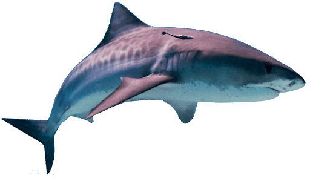
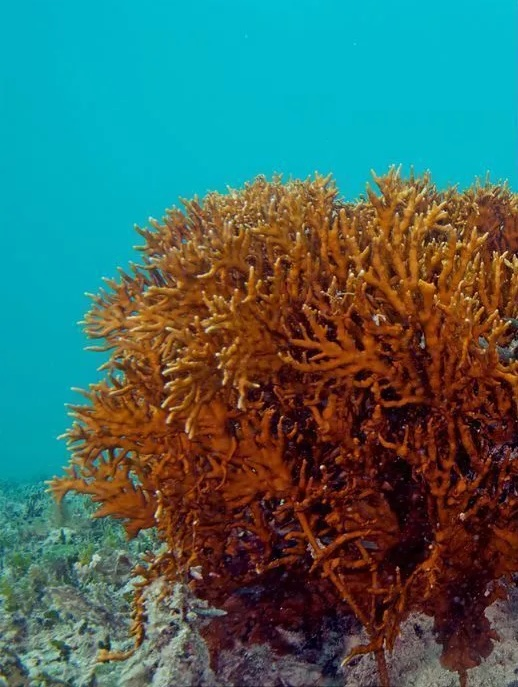
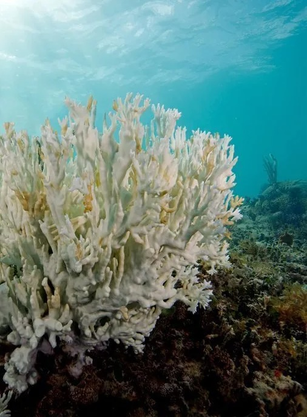
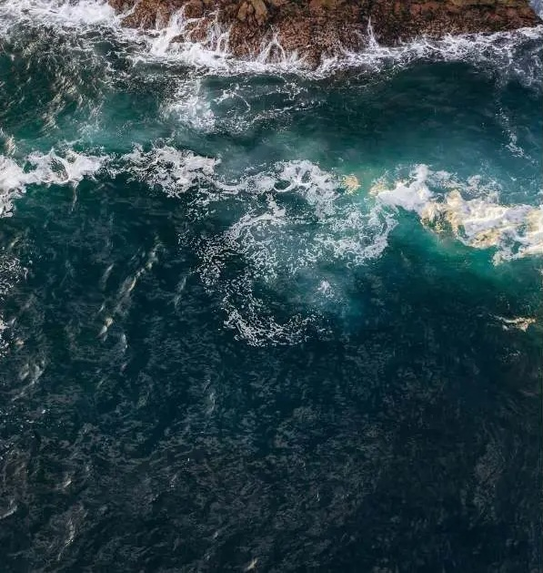
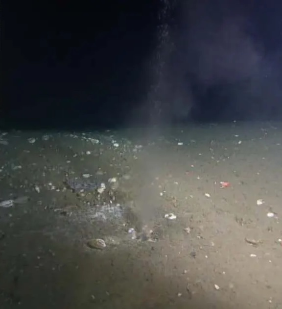

Life Under Water
Marine Ecosystems are DYING
due to climate change.


Water Acidification
Due to carbon dioxide emissions, organisms in the ocean are suffering, affecting the overall food chain and other organisms that live under water.
Warmer Waters
Average sea temperatures have been rising, causing increase for oxygen demand for marine animals. This impacts the dynamics of the ecosystem with change in moving habitats and distribution.


Sunlit Zone
Animals inhabiting Sunlit Zone
- Reptiles and invertebrates
The sunlit zone covers the upper 200 meters where organisms which grow by sunlight dwell. With climates changing, this zone has been darkening and contracting. This creates alterations in the animals' natural habitats, making their ecosystems a less safe and stable environment to live in.
Twilight Zone
Animals inhabiting Twilight Zone
-
- Gelatinous drifting animals
The twilight zone has little light as it is 200-1000 meters deep. Since the seas are warming because of greenhouse gas emissions, there have been fewer organisms living in this zone than before.
Midnight Zone
Animals inhabiting Midnight Zone
- Scavengers
- Cephalopods and invertebrates
- Sharks and visitors
The midnight zone spans 1000-4000 meters deep, where the flow of food and oxygen levels have been affected by climate change. “Marine snow” refers to organic waste and dead matter that sinks to this zone from upper layers, which is what organisms feed on here.
The Abyss
Animals inhabiting the Abyss
- Abyssal pelagic and benthic
The ocean abyss, though around 3000-6000 meters deep, is still affected. The supply of food and changes to currents and temperature have been altered by climate change. This layer also relies on marine snow for energy. De-oxygenation is shifting ecosystems negatively as well.
Trenches
Animals inhabiting Trenches
- Specialised and resilient creatures
The ocean trenches, the deepest layer of the ocean, are similar to the abyss. The chemistry of the acidity has been shifting, which affects the trench organisms. Since it is the lowest layer, it is isolated and facing disruptions from habitat disconnection.